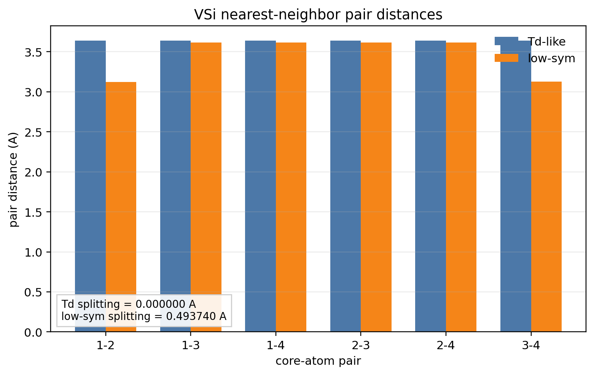
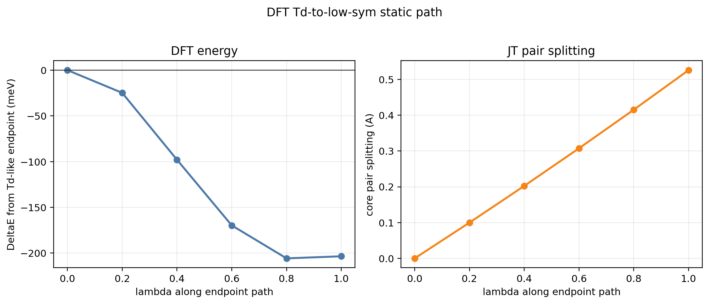
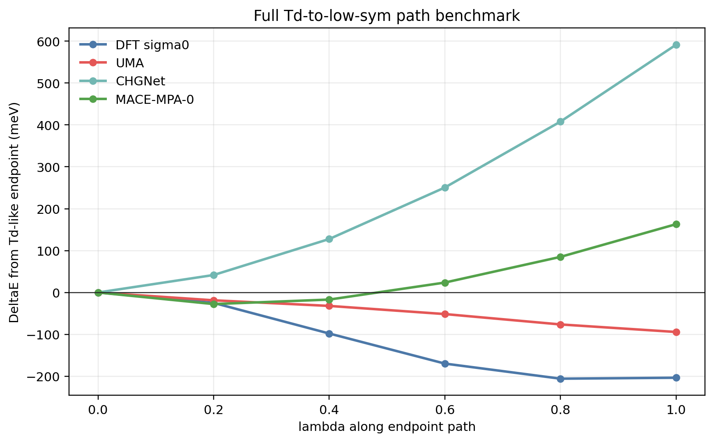
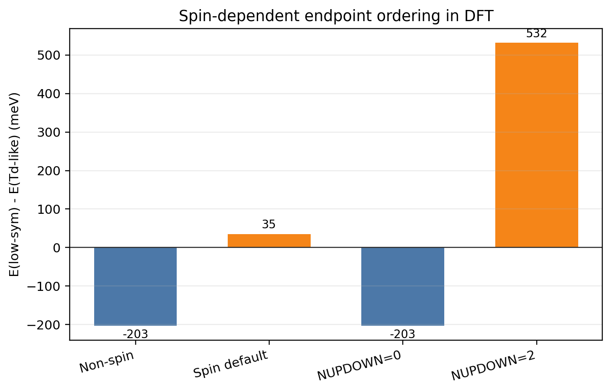
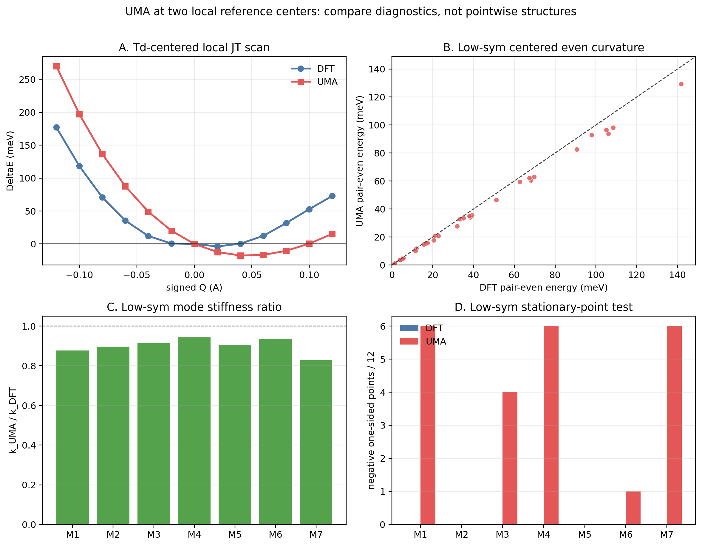

Overview
The silicon vacancy is a useful example for checking how a potential-energy model treats local symmetry breaking. In an ideal diamond-Si vacancy, the four nearest-neighbor Si atoms form a Td-like local environment. A lower-symmetry structure can be reached when these atoms become inequivalent, producing a Jahn-Teller-like distortion around the vacancy.
The analysis here does not treat the problem as a single yes-or-no question. It separates several related checks: a local pairing-channel scan near the Td-like reference, a larger static path from the Td-like structure to a low-symmetry endpoint, spin-dependent DFT endpoint ordering, and a local curvature check around the low-symmetry reference.
- Local scan
- 37 structures from three pairing channels around the Td-like reference
- Endpoint path
- Six images from λ=0.0 to λ=1.0 between the two references
- Pair fingerprint
- 84 one-sided perturbations, grouped into 42 plus/minus pairs
- Energy reference
- DFT energy(σ -> 0) for the main geometry-only comparison
Reference structures
Two local vacancy geometries
Two geometries are used as references. The first is a Td-like vacancy reference where the six pair distances among the four vacancy-nearest-neighbor Si atoms remain degenerate. The second is a relaxed low-symmetry reference with a visible pair-distance splitting.
In the measured core geometry, the Td-like reference has a pair splitting of 0.000000 Angstrom, while the low-symmetry reference has a splitting of 0.493740 Angstrom. These two structures are used as the endpoints for the path and as centers for the local checks.

Local scan and endpoint path
Local response and full static path are separate checks
Starting from the Td-like reference, local distortions were constructed along three symmetry-equivalent pairing channels: (12|34), (13|24), and (14|23). Each channel was sampled at Q=±0.02, ±0.04, ±0.06, ±0.08, ±0.10, and ±0.12 Angstrom, plus the Q=0 reference. This gives 37 structures for the local scan.
On the DFT energy(σ -> 0) surface, this local scan gives a small energy lowering. The minimum occurs near Q=+0.02 Angstrom, with DeltaE about -3.806 meV, and the three channel minima differ by less than 0.001 meV. This local response is then compared with a larger six-image static path from the Td-like endpoint to the low-symmetry endpoint.


ML potential comparison
Model trends along the same path
The six-image path provides a fixed set of structures for comparing relative energy trends. In this comparison, DFT gives a low-symmetry endpoint about 203.460 meV below the Td-like endpoint. UMA also places the low-symmetry endpoint below the Td-like endpoint, with an endpoint value of -94.246 meV relative to the Td-like structure.
CHGNet and MACE-MPA-0 give different endpoint ordering on the same static path. Their endpoint relative energies are 591.431 meV and 163.073 meV, respectively, using each model's internal relative energy along this path.
| Method | Endpoint DeltaE (meV) | Path MAE (meV) | Path RMSE (meV) |
|---|---|---|---|
| UMA | -94.246 | 71.498 | 88.553 |
| CHGNet | 591.431 | 353.504 | 454.684 |
| MACE-MPA-0 | 163.073 | 155.753 | 209.312 |
Spin-polarized references
Endpoint ordering depends on the DFT spin setting
The main path comparison uses the non-spin DFT energy(σ -> 0) surface as a controlled geometry-only reference. Spin-polarized DFT gives additional endpoint-ordering behavior. In the non-spin and fixed M=0 references, the low-symmetry endpoint is about 203 meV lower than the Td-like endpoint.
Under the default spin-polarized branch, the low-symmetry endpoint is about 35 meV higher than the Td-like endpoint. With NUPDOWN=2, the low-symmetry endpoint is about 532 meV higher. This comparison is kept separate from the geometry-only MLIP path comparison.

Low-symmetry perturbations
Paired perturbations around the low-symmetry reference
A separate paired-perturbation set was built around the low-symmetry reference. Seven local modes were used, with six amplitudes and two signs for each mode. This gives 84 structures, grouped into 42 plus/minus pairs. The pair-even component measures the local curvature, while one-sided energy changes show whether the chosen reference is stationary on the tested surface.
For UMA, the pair-even values follow the DFT trend closely in this set. The even Pearson correlation is 0.999521, the even Spearman correlation is 0.998541, and the mean stiffness ratio k_UMA/k_DFT is 0.903315. At the same time, 23 of 84 one-sided UMA perturbations are lower than the UMA energy at the DFT low-symmetry reference, indicating a difference in the local stationary point.

Takeaways
- The local Jahn-Teller scan and the full Td-to-low-symmetry path describe different parts of the same defect landscape.
- The DFT local scan has a meV-scale energy lowering, while the full static path gives an endpoint stabilization of about 203 meV on the non-spin reference surface.
- The MLIP comparison depends on which part of the landscape is tested: endpoint ordering, path shape, curvature, and spin-reference choice are separate pieces of information.